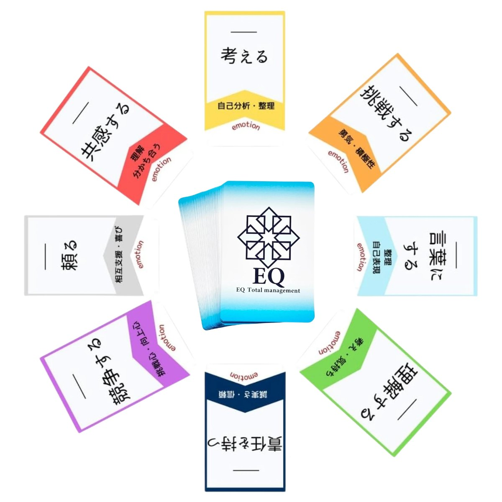

EMOTION — 感情
会議で、自分の案が流された。
胸のあたりがざわつく。
まだ名前のない反応。カードを見ると、それが「悔しい」だったと分かる。
EQコアカード
感情・価値観・認識・行動を、言葉にするためのカード。
01問い
「なんか疲れた」「別に」「まあ、いいか」。
一日のうちに、言葉にしないまま流している気持ちは、いくつあるだろう。
02気づき
感じたことの多くは、言葉になる前に通り過ぎていく。
名前のない気持ちは、見えないまま次の行動を決めている。だから人は、同じところで何度もつまずく。
03EQコアカードとは
EQコアカードは、カード型のEQトレーニングツールです。
並んだ言葉から、今の自分に近い1枚を選ぶ。
それだけで、名前のなかった気持ちに言葉がつきます。8色のカードには、「共感する」「挑戦する」「頼る」など、心の動きを表す言葉が書かれています。ゲーム感覚で使えるので、EQの知識がなくても始められます。
ひとりでセルフコーチングに。体験会で初対面の人と。
チームの1on1や会議の前に。企業研修の共通言語として。
04仕組み
EMOTION — 感情
会議で、自分の案が流された。
胸のあたりがざわつく。
まだ名前のない反応。カードを見ると、それが「悔しい」だったと分かる。
VALUE — 価値観
悔しいのは、
「認められること」を大切にしているから。
感情の奥には、その人が大切にしているものがある。
PERCEPTION — 認識
「無視された」と受け取ったのは、
自分の見方だったかもしれない。
大切にしているものが、出来事の見え方を決めている。
ACTION — 行動
黙るのではなく、
「どう思った？」と聞いてみる。
見え方が変わると、選ぶ行動が変わる。
05体験 — WHAT CHANGES
「なんかモヤモヤする」
「認めてほしかったのに、
流されて悔しかった」
感情に、名前がつく
「あの人とは合わない」
「大切にしているものが、
違うだけだった」
価値観の違いが、見える
「メンバーにやる気がない」
「失敗が怖くて、
手を挙げられなかった」
行動の奥の理由に、気づく
会議で話すのは、いつも同じ人
一人ひとりが、
自分の言葉で話し始める
場が、変わる
体験の中でよく起きる、言葉の変化の例です。
06変化
07誰のためのものか
08つくった人と、広げている人
EQコアカード体験会を、自分で開催できるようになる講座です。
行動につながる感情と、その言語化／集客できる体験会の企画設計（ペルソナ・導線・投稿）／チームのEQスキル・主体性・共感力の育て方
体験会の自主開催（オンライン開催も可）。自分の講座やサービスの入口として体験会を運営できます。
認定料・年間登録料・EQコアカード5セット・認定証・開催マニュアル・スライドテンプレート
人と人をつなぎ、心が動く場をつくる。体験会を「感情の学びの場」に深める、共感型ファシリテーションの講座です。
受講条件：公式ナビゲーター認定者。3日間の集中合宿（リアル開催）。
日程・受講料は、最新の講座案内でご確認ください。講座案内（EQTM）
09はじめる

EQコアカードは、こちらから体験いただけます。